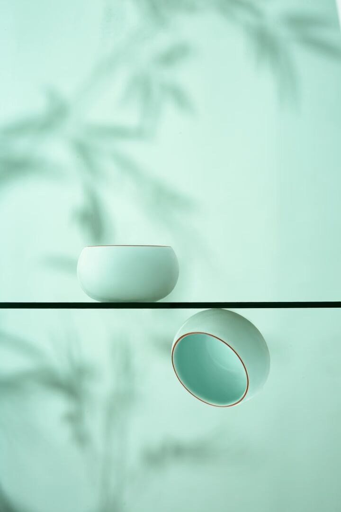
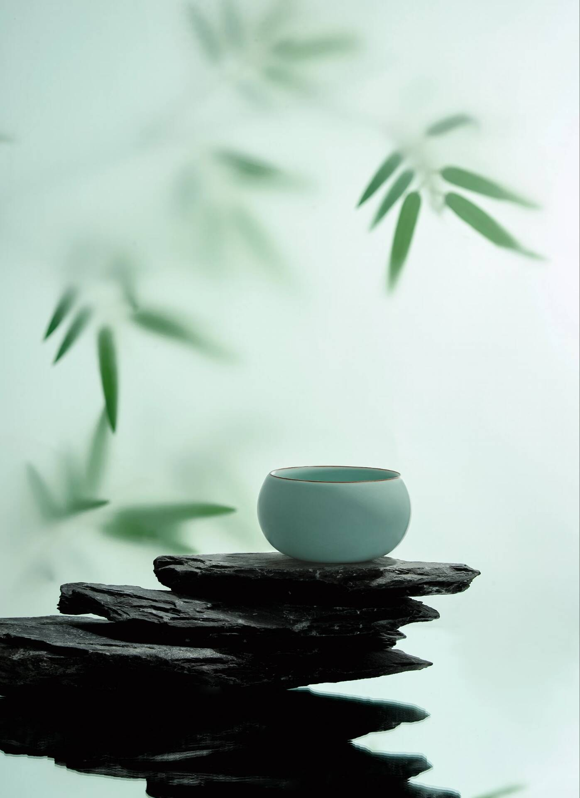
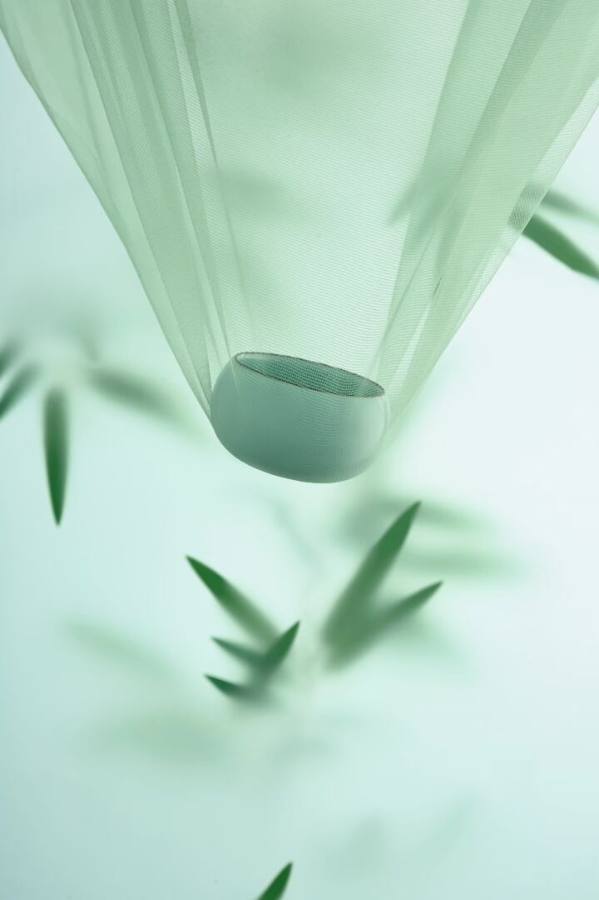

汝窑简介
汝窑是宋代五大名窑之首，素有“汝窑为魁”的美誉，窑址位于河南汝州境内的宝丰清凉寺，北宋晚期为鼎盛烧造期，烧造时长仅约20年，是专为宫廷烧制的御用瓷窑，传世品全球不足百件，极为珍贵，还被欧洲人称作“色拉通”，流传“天青为贵，粉青为尚，天蓝弥足珍贵”的说法。
其造型以出戟尊、玉壶春瓶、胆式瓶、樽、洗、碗、盘等为主，功能涵盖礼器、文房器、饮食装饰器，因“钧汝不过尺，钧汝无大器”，器物大都尺寸不大；胎体为独特的“香灰胎”，釉质莹润、光泽内含，釉面有“冰裂纹”“蟹爪纹”等细密开片，“芝麻挣钉”是分辨汝瓷的重要依据；以玛瑙入釉，釉面气泡大小不一、斜向分布，在不同光照和角度下釉色会产生变化。
悬停放大查看细节


